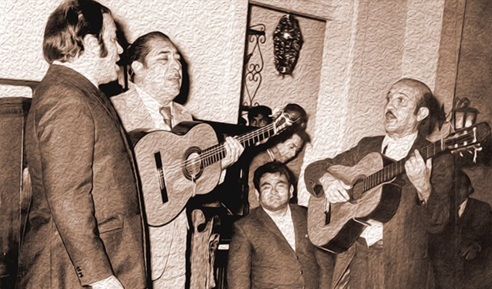

Desde las raíces
Legado y Sentimiento
Herencia García nace del deseo de preservar y difundir la riqueza de nuestra música criolla, llevando el vals, la polca y el festejo a los escenarios más exigentes del país.
Bajo la dirección de la familia García, hemos logrado consolidar un sonido único que combina la elegancia de lo clásico con la energía de las nuevas generaciones.
Excelencia
Calidad musical impecable en cada nota.
Pasión
Amor profundo por nuestras raíces.
